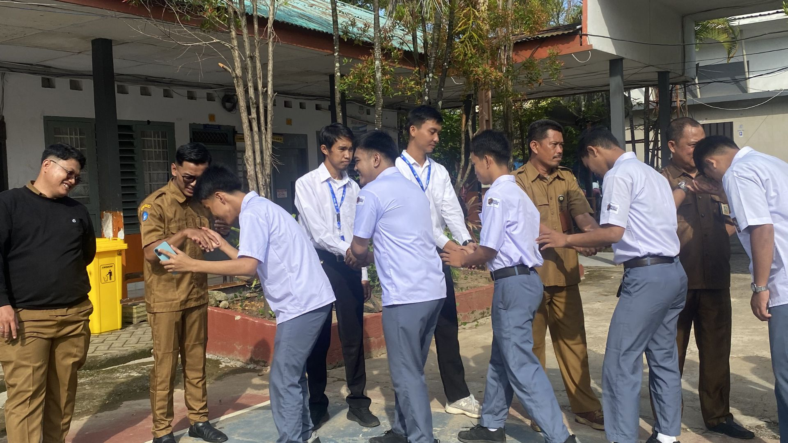
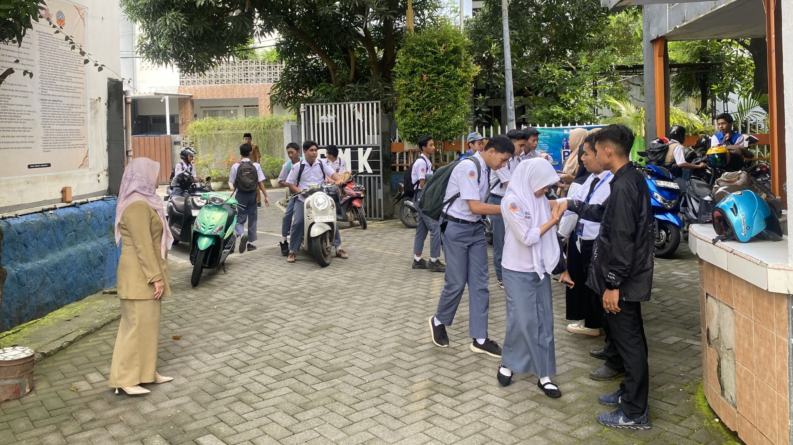
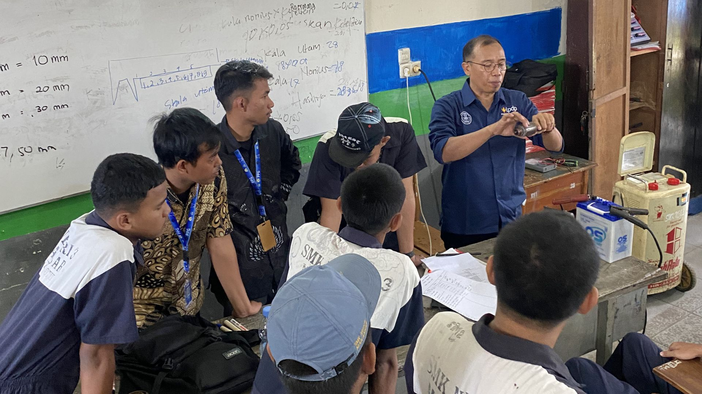
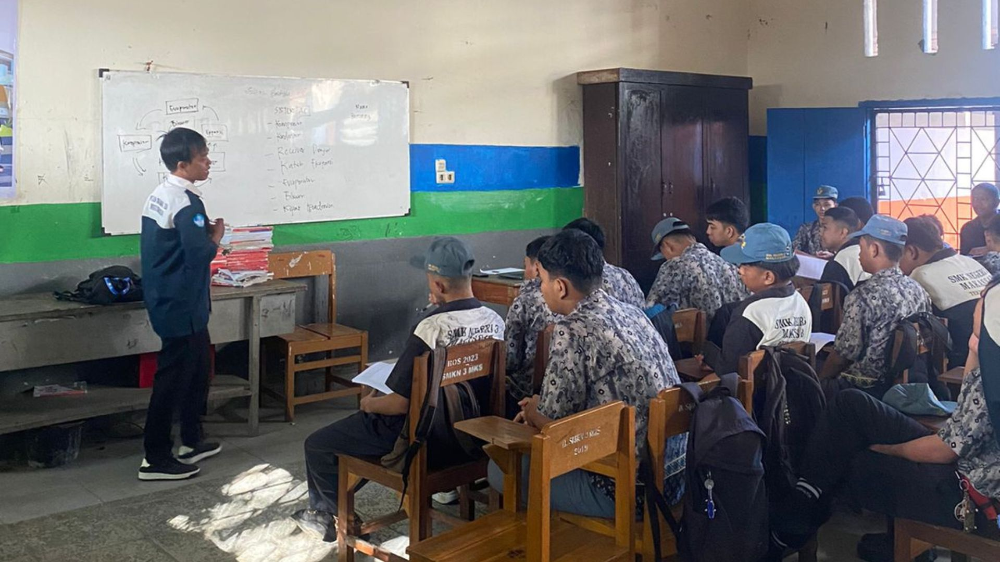

E-Portfolio
WAHYUDIN
Selamat datang di E-Portfolio Wahyudin. Website ini merupakan ruang refleksi awal yang menjadi fondasi dasar dalam membentuk karakter saya sebagai mahasiswa PPG calon guru menuju guru yang profesional, reflektif, dan inovatif.

Profil Mahasiswa

WAHYUDIN
Kontak:
wahyudintamrin@gmail.com www.wahyudintamrin.com +6285299557045Alamat:
Dusun Balocci, Maros, Sulawesi Selatan"Guru yang sejati adalah dia yang tidak pernah berhenti belajar, dan menjadikan setiap ruang kelas sebagai cermin refleksi diri."
Data Diri Akademik
Nomor Induk Mahasiswa
2590074950854
LPTK PPG
Universitas Negeri Makassar
Bidang Studi
Teknik Otomotif
Lokasi PPL Terbimbing
SMK Negeri 3 Makassar
Dosen Pendamping Lapangan
Ir. Wabdillah, S.Pd., M.Pd.
Guru Pamong
Imran Madjid, S.Pd., M.Si., M.Pd.
Asal & Keunikan Daerah
Saya berasal dari Kabupaten Maros. Masyarakat di daerah ini memegang teguh filosofi Siri' na Pacce. Kebanggaan utamanya adalah Karst Maros-Pangkep, sebuah UNESCO Global Geopark. Menjadi kawasan karst terbesar kedua di dunia, bentang alam ini menyimpan keunikan ekosistem endemik dan lukisan gua prasejarah tertua di dunia.
Inspirasi & Tujuan Menjadi Guru Profesional
Terinspirasi dari filosofi Ki Hadjar Dewantara untuk menuntun kodrat anak, tujuan saya menjadi guru profesional adalah menghadirkan pembelajaran inovatif yang berpihak pada murid. Saya berkomitmen menjadi teladan yang memfasilitasi tumbuh kembang potensi terbaik peserta didik demi mewujudkan generasi emas berkarakter Pancasila.
Analisis Artefak Pembelajaran
Bagian ini memuat refleksi dan analisis mendalam terhadap produk pembelajaran (Perangkat Ajar, Media, atau Asesmen) yang telah disusun selama pelaksanaan PPL.
Analisis Perangkat Pembelajaran Siklus 1
1. Kaitan dengan Teori Pemahaman Peserta Didik
Konteks Teori: Konsep ini menekankan pentingnya pengenalan mendalam terhadap latar belakang, kesiapan kognitif, dan kondisi sosio-emosional siswa sebagai fondasi perancangan instruksional yang berpihak pada peserta didik.
Refleksi Penerapan: Dalam pelaksanaan pembelajaran, ditemukan dinamika kelas di mana beberapa siswa tampak kelelahan atau kurang fokus karena memiliki tanggung jawab eksternal, seperti harus membantu keluarga sepulang sekolah.
Dampak Pedagogis: Pemahaman terhadap kondisi riil ini menggeser paradigma mengajar menjadi lebih empatik. Alih-alih memaksakan penyampaian materi secara satu arah, pendekatan disesuaikan untuk menarik kembali fokus siswa tanpa menambah beban kognitif yang berlebihan. Hal ini dicapai melalui komunikasi persuasif dan memperbanyak aktivitas praktik yang melibatkan motorik sehingga siswa tetap terjaga dan terlibat aktif.
2. Kaitan dengan Teori Pembelajaran Mendalam (Deep Learning)
Konteks Teori: Pembelajaran Mendalam (Deep Learning) menuntut proses belajar yang Meaningful (bermakna), mendorong siswa untuk berpikir kritis, memecahkan masalah, dan mengaplikasikan pengetahuan pada konteks dunia nyata, bukan sekadar hafalan.
Refleksi Penerapan: Penerapan kerangka Understanding by Design (UbD) sangat membantu dalam menstrukturkan materi secara kohesif, misalnya dalam menyusun alur 6 pertemuan untuk materi Sistem AC atau merancang langkah pemecahan masalah sistem air conditioning di SMK Negeri 3 makassar. Tujuan akhir pemahaman sudah dikunci sejak awal (sebagai backward design).
Dampak Pedagogis: Siswa tidak hanya menghafal prinsip dasar termodinamika atau komponen sistem pengapian konvensional, tetapi diajak untuk mengurai fungsi dan kerusakannya dalam sebuah sistem utuh. Kasus ketidaksesuaian antara teori, aktivitas, dan asesmen dapat direduksi karena seluruh aktivitas difokuskan pada penalaran klinis yang relevan dengan kebutuhan industri.
3. Analisis Artefak Produk Rencana Pembelajaran
Teori atau Konsep Pedagogi yang Diadopsi: Menggunakan kerangka UbD yang dipadukan dengan pendekatan Deep Learning serta model pembelajaran berbasis masalah (PBL). Pendekatan ini memastikan setiap elemen materi terhubung langsung dengan simulasi praktik bengkel.
Kendala yang Terjadi: Tantangan utama adalah mempertahankan keterlibatan (engagement) siswa yang memiliki tingkat energi fluktuatif akibat kelelahan dari aktivitas di luar sekolah, serta memastikan pemerataan pemahaman saat membedah sistem otomotif yang kompleks.
Solusi dan Pembelajaran: Mentransformasi teori menjadi LKPD interaktif dan Jobsheet praktikum yang berpusat pada penemuan (inquiry). Bukti artefak tidak lagi hanya terpaku pada format tunggal, melainkan terbuka untuk berbagai bentuk dokumentasi tugas (baik dokumen tertulis maupun tautan daring) yang memudahkan siswa mengumpulkan hasil belajar mereka sesuai dengan kemampuan dan aksesibilitas masing-masing.
4. Kendala yang Terjadi dan Solusi Pedagogis (Problem-Solving)
Konteks Kendala
Dalam pelaksanaan praktik pembelajaran, kendala utama yang saya hadapi tidak berpusat pada penyampaian materi teknis otomotif, melainkan pada aspek kesiapan dan kondisi sosio-emosional peserta didik. Berdasarkan hasil observasi dan asesmen awal, saya menemukan dinamika kelas di mana beberapa siswa kerap terlihat kelelahan, kurang fokus, dan mengalami penurunan motivasi saat mengikuti pembelajaran di kelas. Setelah melakukan pendekatan personal, teridentifikasi bahwa kondisi ini dipicu oleh tanggung jawab eksternal siswa yang harus bekerja membantu keluarga sepulang sekolah.
Analisis Berdasarkan Teori
Merujuk pada konsep Pemahaman Peserta Didik, kendala ini menyadarkan saya bahwa rancangan pembelajaran tidak bisa berjalan kaku. Kelelahan fisik yang dialami siswa secara langsung menurunkan kapasitas memori kerja (working memory) mereka. Jika saya memaksakan metode pengajaran konvensional atau ceramah panjang, materi teknis yang kompleks (seperti prinsip kerja termodinamika atau sistem hidrolik) tidak akan bermakna dan hanya akan memicu kebosanan.
Tindakan dan Solusi Profesional
Menghadapi situasi ini, saya mengambil langkah strategis untuk menyesuaikan pendekatan fasilitasi tanpa menurunkan standar kompetensi industri yang harus dicapai:
Adaptasi Pendekatan Deep Learning: Saya merestrukturisasi alur belajar dengan mengurangi porsi teori teoretis di dalam kelas dan langsung mengalihkannya pada aktivitas berbasis penemuan (inquiry) di bengkel. Dengan memperbanyak porsi praktik dan aktivitas motorik melalui penggunaan Jobsheet terstruktur, siswa dipaksa untuk bergerak dan berdiskusi, yang secara efektif mengembalikan tingkat kewaspadaan dan fokus mereka.
Penerapan Asesmen yang Fleksibel: Menyadari keterbatasan waktu dan tenaga siswa di luar jam sekolah, saya memodifikasi format pengumpulan tugas dan portofolio. Saya memastikan sistem penerimaan tugas lebih fleksibel (mendukung unggahan format Word, PDF, hingga tautan dokumen daring). Hal ini mengurangi beban administratif operasional siswa sehingga mereka bisa lebih fokus pada substansi penyelesaian masalah.
Komunikasi Pesrsuasif dan Empatik: Saya memposisikan diri bukan sekadar sebagai instruktur teknis, melainkan sebagai fasilitator yang memahami kondisi mereka. Pendekatan ini membangun lingkungan belajar yang lebih aman (safe environment), di mana siswa merasa dihargai usahanya, sehingga motivasi intrinsik mereka kembali tumbuh.
Refleksi Diri
Kendala ini memberikan pelajaran berharga bahwa esensi dari problem-solving seorang guru kejuruan bukan hanya mumpuni mendiagnosis kerusakan mesin, tetapi juga kepekaan dalam mendiagnosis hambatan belajar siswa. Dengan mengintegrasikan empati ke dalam desain pembelajaran (UbD), saya mampu menciptakan pengalaman belajar yang tetap bermakna (meaningful) dan mengakomodasi realitas kehidupan peserta didik.
5. Diskusi Umpan Balik (Feedback)
Catatan: Diskusi ini merepresentasikan hasil observasi pasca-pelaksanaan siklus pembelajaran materi Sistem Pengapian.
| Pihak Observer / Pendidik | Catatan Umpan Balik & Refleksi | Rencana Tindak Lanjut |
|---|---|---|
| Guru Pamong (Imran Madjid, S.Pd., M.Si., M.Pd.) |
Mengapresiasi modifikasi strategi pengajaran untuk siswa yang mengalami hambatan belajar akibat kelelahan. Penerapan tutor sebaya sangat efektif menjaga ritme kerja kelompok. | Disarankan menambah ice breaking mekanikal singkat (misal: tantangan identifikasi alat) sebelum masuk ke Jobsheet utama. |
| Dosen Pembimbing Lapangan (DPL) (Ir. Wabdillah, S.Pd., M.Pd) |
Penggabungan Problem Based Learning dan aspek Mindful-Meaningful-Joyful tergambar jelas pada studi kasus di LKPD. Keberpihakan pada siswa sangat kuat. | Validasi pada rubrik observasi harus lebih spesifik. Aspek kolaborasi antarsiswa di bawah tekanan harus terukur sebagai komponen penilaian afektif. |
| Mahasiswa PPG (Wahyudin) |
Sepakat dengan masukan Guru Pamong dan DPL. Dinamika kelas yang fluktuatif menyadarkan bahwa manajemen kesiapan mental sama krusialnya dengan persiapan materi teknis. | Modul Ajar dan Jobsheet berikutnya akan direvisi dengan menyisipkan rubrik observasi keaktifan kolaborasi serta aktivitas transisi prakondisi bengkel. |
Analisis Perangkat Pembelajaran Siklus 2
1. Kaitan dengan Teori Pemahaman Peserta Didik
Konteks Teori: Konsep ini menekankan pentingnya pengenalan mendalam terhadap latar belakang, kesiapan kognitif, dan kondisi sosio-emosional siswa sebagai fondasi perancangan instruksional yang berpihak pada peserta didik.
Refleksi Penerapan: Saat sesi tatap muka berlangsung, terlihat jelas variasi fokus dan stamina siswa di kelas; beberapa anak tampak sangat lesu dan kesulitan berkonsentrasi karena memikul tanggung jawab membantu perekonomian keluarga selepas jam sekolah.
Dampak Pedagogis: Penemuan realitas sosial ini mengubah cara pandang saya dalam mengelola kelas. Dibandingkan memaksakan transfer materi teoretis satu arah yang monoton, rancangan aktivitas diubah agar dapat memulihkan perhatian mereka tanpa menguras kapasitas pikiran secara berlebihan. Solusi ini diterapkan lewat dialog yang persuasif serta peningkatan porsi aktivitas berbasis kinestetik (gerak motorik) agar siswa tetap terjaga dan antusias berpartisipasi.
2. Kaitan dengan Teori Pembelajaran Mendalam (Deep Learning)
Konteks Teori: Pembelajaran mendalam (Deep Learning) menuntut proses belajar yang bermakna (Meaningful), mendorong siswa untuk berpikir kritis, memecahkan masalah, dan mengaplikasikan pengetahuan pada konteks dunia nyata, bukan sekadar hafalan.
Refleksi Penerapan: Kerangka kerja Understanding by Design (UbD) diimplementasikan sebagai panduan dalam menyusun peta kompetensi secara terpadu, seperti pembagian alur 6 pertemuan untuk pendalaman materi Sistem AC di SMKN 3 Makassar. Target kompetensi akhir dikunci sejak awal perencanaan sebagai jangkar pembelajaran (backward design).
Dampak Pedagogis: Dampak positifnya, siswa tidak lagi sekadar menghafal definisi komponen seperti evaporator atau katup ekspansi secara terpisah. Mereka ditantang untuk menganalisis keterkaitan fungsi antar-komponen dalam siklus refrigerasi utuh serta melakukan penalaran klinis saat mendiagnosis kerusakan, sehingga celah ketidaksesuaian antara teori dan asesmen industri dapat dieliminasi.
3. Analisis Artefak Produk Rencana Pembelajaran
Teori atau Konsep Pedagogi yang Diadopsi: Mengintegrasikan prinsip UbD dengan strategi Deep Learning serta model Problem Based Learning (PBL). Kombinasi ini memastikan seluruh landasan teori bermuara langsung pada problem otentik yang biasa dijumpai di bengkel otomotif.
Kendala yang Terjadi: Hambatan utama yang muncul adalah fluktuasi energi psikologis siswa akibat kelelahan fisik dari aktivitas luar sekolah, serta tantangan dalam menyetarakan pemahaman konsep kelistrikan dan tekanan mekanis AC yang cukup rumit.
Solusi dan Pembelajaran: Menjabarkan konsep abstrak ke dalam lembar kerja interaktif (LKPD) dan panduan praktikum (Jobsheet) yang berbasis penemuan masalah (inquiry). Hasil pengerjaan tugas pun dibuat adaptif; siswa tidak dikunci pada satu bentuk laporan kerja, melainkan diberi kebebasan mengumpulkan portofolio dalam berbagai format digital melalui platform Google Drive sekolah demi mengakomodasi keterbatasan waktu mereka.
4. Kendala yang Terjadi dan Solusi Pedagogis (Problem-Solving)
Konteks Kendala
Tantangan terbesar dalam pelaksanaan pembelajaran ini bukan terletak pada penyampaian substansi teknis otomotif, melainkan pada pengelolaan faktor emosional dan kesiapan belajar anak. Melalui pendekatan individual dan asesmen awal non-kognitif, terungkap bahwa penurunan motivasi dan rasa kantuk beberapa siswa dipicu oleh beban kerja fisik membantu keluarga setelah pulang sekolah.
Analisis Berdasarkan Teori
Mengacu pada teori Pemahaman Peserta Didik, kelelahan fisik berdampak langsung pada penurunan performa memori kerja (working memory) siswa. Memaksa mereka mendengarkan ceramah teoretis yang panjang mengenai hukum termodinamika atau diagram sistem hidrolik hanya akan memicu kejenuhan akademis dan membuat pembelajaran kehilangan maknanya.
Tindakan dan Solusi Profesional
Menghadapi situasi ini, saya mengambil langkah strategis untuk menyesuaikan pendekatan fasilitasi tanpa menurunkan standar kompetensi industri yang harus dicapai:
Adaptasi Pendekatan Deep Learning: Saya merestrukturisasi manajemen kelas dengan memangkas durasi paparan teori di dalam ruangan dan langsung mengalihkan siswa ke area bengkel praktikum memakai Jobsheet terstruktur. Aktivitas fisik dan diskusi kelompok selama penanganan unit kendaraan efektif memulihkan kesigapan dan konsentrasi mereka.
Penerapan Asesmen yang Fleksibel: Menyadari sempitnya waktu luang siswa di rumah, saya memberikan kelonggaran dalam pengumpulan portofolio tugas (menerima berkas digital berupa Word, PDF, hingga tautan dokumen daring). Hal ini meminimalkan hambatan administratif sehingga siswa bisa fokus pada esensi pemecahan masalah.
Komunikasi Pesrsuasif dan Empatik: Saya menempatkan diri sebagai fasilitator yang ramah dan memahami kondisi personal mereka, sehingga tercipta lingkungan belajar yang aman (safe environment) yang mampu menumbuhkan kembali motivasi belajar intrinsik siswa.
Refleksi Diri
Pengalaman ini menegaskan bahwa tugas utama guru produktif tidak hanya mendiagnosis kerusakan mekanis kompresor AC, melainkan juga harus peka dalam mengidentifikasi hambatan mental dalam belajar. Melalui sentuhan empati pada kerangka UbD, esensi pembelajaran yang bermakna tetap dapat tersampaikan di tengah keterbatasan realitas hidup siswa.
5. Diskusi Umpan Balik (Feedback)
Catatan: Diskusi ini merepresentasikan hasil observasi pasca-pelaksanaan siklus pembelajaran materi Sistem Air Conditioning.
| Pihak Observer / Pendidik | Catatan Umpan Balik & Refleksi | Rencana Tindak Lanjut |
|---|---|---|
| Guru Pamong (Imran Madjid, S.Pd., M.Si., M.Pd.) |
Langkah memindahkan fokus belajar dari kelas ke aktivitas bengkel menggunakan Jobsheet pemeriksaan sangat tepat dilakukan. Ini merupakan solusi nyata untuk mengatasi rasa kantuk dan memulihkan fokus siswa yang kelelahan karena harus bekerja paruh waktu membantu keluarga selepas sekolah. | Untuk menyiasati ketimpangan energi antar-siswa, optimalkan strategi pendampingan kelompok melalui metode Tutor Sebaya. Cobalah pasangkan siswa yang memiliki hambatan belajar/kelelahan dengan siswa kategori pencapaian tinggi agar terjadi transfer pengetahuan dan kerja sama tim yang solid sesuai dengan SOP bengkel. |
| Dosen Pembimbing Lapangan (DPL) (Ir. Wabdillah, S.Pd., M.Pd) |
Penerapan Backward Design dari kerangka UbD sudah terlihat jelas, di mana Anda berhasil menyelaraskan tujuan akhir berupa penalaran klinis dengan bukti evaluasi portofolio yang fleksibel. Secara teori Deep Learning, kelonggaran format tugas digital ini menunjukkan keberpihakan yang kuat pada kondisi nyata siswa. | Kelonggaran tugas digital di Google Drive sudah sangat baik. Namun, untuk ke depannya, pastikan Anda juga memperkuat penilaian formatif langsung (on-the-spot assessment) menggunakan rubrik observasi singkat saat praktikum berlangsung. Tujuannya agar konfirmasi keterampilan siswa saat mengoperasikan alat seperti manifold gauge atau vacuum pump bisa divalidasi dan diarahkan seketika di bengkel tanpa harus menunggu tugas portofolio terkumpul. |
| Mahasiswa PPG (Wahyudin) |
Saya sepenuhnya setuju dengan evaluasi dari Guru Pamong dan DPL. Dinamika kelas yang fluktuatif menyadarkan saya bahwa mengelola kesiapan mental dan emosional siswa di bengkel otomotif sama krusialnya dengan penguasaan materi teknis kelistrikan maupun sistem refrigerasi itu sendiri. | Pada siklus pembelajaran berikutnya, saya akan merevisi Modul Ajar dan Jobsheet dengan menyisipkan metode Tutor Sebaya untuk menyeimbangkan dinamika kelompok. Saya juga akan mengintegrasikan lembar observasi penilaian formatif langsung di area kerja serta merancang aktivitas ice breaking mekanikal singkat sebagai pengkondisian awal fokus siswa sebelum praktik dimulai. |
Analisis Perangkat Pembelajaran Siklus 3
1. Kaitan dengan Teori Pemahaman Peserta Didik
Konteks Teori: Konsep ini menekankan pentingnya pengenalan mendalam terhadap latar belakang, kesiapan kognitif, dan kondisi sosio-emosional siswa sebagai fondasi perancangan instruksional yang berpihak pada peserta didik.
Refleksi Penerapan: Dalam pelaksanaan pembelajaran Sistem Audio Video, asesmen diagnostik non-kognitif awal telah dirancang untuk menggali informasi terkait aktivitas belajar peserta didik di rumah, seperti menanyakan "Apa saja kegiatan Anda setelah pulang sekolah hingga tidur malam?". Hal ini mengantisipasi dinamika kelas di mana beberapa siswa tampak kelelahan karena memiliki tanggung jawab eksternal, seperti membantu keluarga sepulang sekolah.
Dampak Pedagogis: Pemahaman terhadap kondisi riil ini menggeser paradigma mengajar menjadi lebih empatik. Strategi pembelajaran secara proaktif mengakomodasi siswa dengan "Hambatan Belajar" melalui pendampingan intensif, bahan ajar visual berupa video, dan bimbingan teman sebaya. Pendekatan ini dirancang untuk menarik kembali fokus siswa tanpa menambah beban kognitif yang berlebihan melalui aktivitas yang lebih interaktif.
2. Kaitan dengan Teori Pembelajaran Mendalam (Deep Learning)
Konteks Teori: Pembelajaran Mendalam (Deep Learning) menuntut proses belajar yang Meaningful (bermakna), mendorong siswa untuk berpikir kritis, memecahkan masalah, dan mengaplikasikan pengetahuan pada konteks dunia nyata, bukan sekadar hafalan.
Refleksi Penerapan: Modul ini secara eksplisit mengadopsi pendekatan Deep Learning (Mindful, Meaningful, Joyful) yang dipadukan dengan sintaks Problem Based Learning (PBL). Alur pembelajaran disusun agar siswa tidak sekadar menghafal komponen, melainkan diajak mengurai masalah kontekstual, seperti menganalisis sistem audio mobil yang tiba-tiba mati total padahal kondisi aki baik.
Dampak Pedagogis: Pembelajaran menjadi sangat relevan dengan kebutuhan industri. Siswa dilatih untuk melakukan penalaran klinis, mulai dari mengidentifikasi komponen hingga menganalisis wiring diagram sistem audio yang memiliki kesalahan sambungan.
3. Analisis Artefak Produk Rencana Pembelajaran
Teori atau Konsep Pedagogi yang Diadopsi: Rencana pembelajaran ini mengadopsi model Problem Based Learning (PBL) dengan pendekatan Deep Learning yang diimplementasikan secara Blended Learning. Pendekatan ini memastikan penyampaian teori terhubung langsung dengan simulasi praktik bengkel melalui penyelidikan berbantuan modul digital dan video YouTube
Kendala yang Terjadi: angan utama adalah mempertahankan keterlibatan siswa yang memiliki tingkat energi fluktuatif akibat kelelahan dari aktivitas di luar sekolah, serta memastikan pemerataan pemahaman saat membedah skema kelistrikan audio yang kompleks.
Solusi dan Pembelajaran: Teori ditransformasikan menjadi Lembar Kerja Peserta Didik (LKPD) yang dikerjakan secara berkelompok dan Jobsheet praktikum pemeriksaan sistem audio video (mencakup Head Unit, Antena, Kabel Konektor, Speaker, dll.) yang berpusat pada inkuiri. Bukti artefak pembelajaran dirancang sangat fleksibel; siswa dapat mengunggah hasil diskusi kelas maupun laporan revisi secara umum, baik dalam bentuk Word, PDF, maupun tautan Google Document langsung ke Google Drive kelas.
4. Kendala yang Terjadi dan Solusi Pedagogis (Problem-Solving)
Konteks Kendala
Dalam pelaksanaan praktik, hambatan utama berpusat pada aspek kesiapan sosio-emosional peserta didik. Beberapa siswa terlihat kelelahan dan mengalami penurunan motivasi, yang dipicu oleh tanggung jawab eksternal siswa sepulang sekolah.
Analisis Berdasarkan Teori
Merujuk pada konsep Pemahaman Peserta Didik, kelelahan fisik menurunkan kapasitas memori kerja siswa. Jika pengajaran teknis kelistrikan sistem audio diberikan melalui metode ceramah konvensional, materi akan kehilangan makna dan memicu kebosanan.
Tindakan dan Solusi Profesional
Menghadapi situasi ini, saya mengambil langkah strategis untuk menyesuaikan pendekatan fasilitasi tanpa menurunkan standar kompetensi industri yang harus dicapai:
Adaptasi Pendekatan Deep Learning: Mengurangi porsi teori di kelas dan mengalihkannya pada aktivitas berbasis masalah, seperti memecahkan studi kasus diagram kelistrikan audio. Penggunaan Jobsheet secara langsung memaksa siswa untuk bergerak mengukur hambatan dan kontinuitas komponen menggunakan multimeter, sehingga mengembalikan tingkat kewaspadaan mereka.
Penerapan Asesmen yang Fleksibel: Modifikasi format pengumpulan tugas pendukung portofolio dilakukan agar siswa dapat menggunakan format file secara umum (Word, PDF, atau link dokumen daring). Hal ini mengurangi beban administratif operasional.
Komunikasi Pesrsuasif dan Empatik: Memposisikan diri sebagai fasilitator yang membangun lingkungan belajar inklusif, termasuk memberdayakan siswa pencapaian tinggi sebagai tutor sebaya bagi temannya yang mengalami hambatan.
Refleksi Diri
Kendala ini membuktikan bahwa mendiagnosis hambatan belajar siswa sama pentingnya dengan mendiagnosis kerusakan sistem audio. Desain pembelajaran yang empatik mampu mengakomodasi realitas kehidupan peserta didik sambil tetap menjaga pencapaian kompetensi.
5. Diskusi Umpan Balik (Feedback)
Catatan: Diskusi ini merepresentasikan hasil observasi pasca-pelaksanaan siklus pembelajaran materi Sistem Audio Video.
| Pihak Observer / Pendidik | Catatan Umpan Balik & Refleksi | Rencana Tindak Lanjut |
|---|---|---|
| Guru Pamong (Imran Madjid, S.Pd., M.Si., M.Pd.) |
Mengapresiasi modifikasi strategi pengajaran untuk siswa yang kelelahan. Penerapan strategi tutor sebaya sangat efektif menjaga ritme kerja kelompok heterogen. | Disarankan menambah ice breaking mekanikal singkat (misal: tantangan identifikasi fuse atau konektor RCA) sebelum masuk ke pengerjaan LKPD/Jobsheet utama. |
| Dosen Pembimbing Lapangan (DPL) (Ir. Wabdillah, S.Pd., M.Pd) |
Penggabungan model Problem Based Learning (PBL) dan aspek Mindful-Meaningful-Joyful tergambar jelas pada penyelesaian skenario masalah kontekstual. | Validasi pada instrumen rubrik observasi formatif keaktifan dan partisipasi diskusi kelompok harus lebih spesifik untuk mengukur aspek kolaborasi di bawah tekanan/kelelahan. |
| Mahasiswa PPG (Wahyudin) |
Sepakat dengan masukan Guru Pamong dan DPL. Manajemen kesiapan mental terbukti sama krusialnya dengan persiapan materi diagnosis wiring diagram sistem audio video. | Modul Ajar dan Jobsheet berikutnya akan direvisi dengan menyisipkan rubrik observasi kolaborasi afektif yang terukur serta aktivitas transisi prakondisi bengkel. |
A. Kendala Penyusunan
Heterogenitas Siswa: Kendala utama adalah kesulitan memetakan karakteristik dan kesiapan belajar peserta didik secara komprehensif. Di kelas tempat pelaksanaan PPL, peserta didik memiliki rentang kemampuan kognitif dan gaya belajar yang sangat beragam.
Tantangan Diferensiasi: Meskipun telah melakukan asesmen diagnostik di awal, merumuskan rancangan pembelajaran berdiferensiasi (konten dan proses) ke dalam Modul Ajar dan LKPD ternyata sangat menantang.
Efisiensi Waktu: Kesulitan menemukan titik keseimbangan materi untuk siswa slow learner dan fast learner menyebabkan proses penyusunan instrumen dan aktivitas belajar memakan waktu jauh lebih lama dari perkiraan awal.
B. Adopsi Teori & Pedagogi
Landasan Filsafat: Produk pembelajaran dilandasi oleh filsafat Konstruktivisme, yang diimplementasikan melalui model Problem-Based Learning (PBL).
Konsep Pedagogi: Meyakini bahwa peserta didik membangun pengetahuannya sendiri melalui pengalaman nyata dan pemecahan masalah, bukan sekadar menerima informasi pasif dari pendidik.
Penerapan pada Produk: Modul Ajar dan LKPD diawali dengan orientasi masalah kontekstual. LKPD menjadi panduan diskusi dan penyelidikan mandiri, menggeser peran guru dari penceramah menjadi fasilitator pembelajaran.
C. Faktor Keberhasilan
Media Interaktif: Penggunaan media pembelajaran yang interaktif dan visual menjadi faktor utama keberhasilan, mengatasi kecenderungan pasif siswa yang terbiasa dengan metode ceramah.
Peningkatan Atensi: Implementasi media berbasis gamification dan video animasi edukatif terbukti meningkatkan tingkat atensi siswa secara drastis selama proses pembelajaran.
Konkretisasi Materi: Media pembelajaran berhasil mengkonkretkan materi yang abstrak sehingga lebih mudah dicerna, memantik rasa ingin tahu siswa dari fase apersepsi hingga akhir kegiatan.
D. Adaptasi Situasional
Modifikasi LKPD: Untuk kelas dengan kesiapan kognitif lebih rendah, instruksi pada LKPD harus dirombak menjadi lebih bertahap (step-by-step) dengan pemberian scaffolding yang memadai agar siswa tidak frustrasi.
Penyesuaian Bahan Bacaan: Bahan bacaan pada Modul Ajar perlu disesuaikan dengan menggunakan diksi yang lebih sederhana dan mudah dipahami sesuai tingkat perkembangan bahasa siswa.
Fleksibilitas Asesmen: Rubrik penilaian formatif harus dimodifikasi agar target pencapaian atau Kriteria Ketercapaian Tujuan Pembelajaran (KKTP) lebih realistis dengan kondisi awal kesiapan belajar siswa.
Lampiran Penilaian PPL
Keterangan: Bagian ini berisi hasil penilaian otentik dari Guru Pamong terkait rancangan perangkat pembelajaran (Lampiran 7) dan praktik mengajar di kelas (Lampiran 8) yang telah dilaksanakan selama 3 siklus.
Lampiran 7
Instrumen Penilaian Perangkat Pembelajaran
Dokumen ini memuat nilai dan catatan dari Guru Pamong terhadap Modul Ajar/RPP, Media, LKPD, dan Instrumen Penilaian yang disusun pada siklus 1 hingga 3.
| Siklus | Materi |
|---|---|
| Siklus 1 | Sistem Pengapian |
| Siklus 2 | Sistem AC |
| Siklus 3 | Sistem Audio Video |
Lampiran 8
Instrumen Penilaian Praktik Mengajar
Dokumen ini berisi hasil evaluasi keterampilan mengajar (keterampilan membuka pelajaran, penguasaan materi, pengelolaan kelas) yang dinilai oleh Guru Pamong.
| Siklus | Fokus Keterampilan |
|---|---|
| Siklus 1 | Pengelolaan Kelas |
| Siklus 2 | Penggunaan Media |
| Siklus 3 | Evaluasi Pembelajaran |
Model Guru yang Dituju
Saya berkomitmen menjadi pendidik humanis, reflektif, dan inovatif yang menguasai empat kompetensi inti untuk mewujudkan pembelajaran berpihak pada murid, menanamkan karakter pembelajar mendalam, serta membangun kolaborasi sinergis.
Misi Pribadi
- Mewujudkan Pembelajaran yang Berpihak pada Murid.
- Menjadi Pembelajar Sepanjang Hayat yang Inovatif.
- Menanamkan Karakter Profil Pelajar Pancasila.
- Membangun Kolaborasi yang Sinergis.
Kompetensi Inti
- Pedagogik: Mengelola pembelajaran dan memahami karakteristik murid.
- Profesional: Menguasai materi pelajaran secara mendalam.
- Kepribadian: Menjadi teladan berkarakter mulia dan dewasa.
- Sosial: Berkomunikasi efektif dengan masyarakat sekolah.
Karakter Pendidik
- Reflektif: Selalu mengevaluasi diri demi perbaikan kualitas pembelajaran.
- Kolaboratif: Terbuka bekerja sama untuk memajukan ekosistem pendidikan.
- Inovatif: Kreatif menghadirkan metode dan media baru di kelas.
- Humanis: Mengajar dengan empati, kasih sayang, dan berpihak pada murid.
Refleksi Akhir & Filosofi
Bagian ini memuat refleksi akhir dan filosofi pendidikan yang akan di adopsi dalam pembelajaran dikelas ketika melaksanan PPL Mandiri dan ketika penulis menjadi seorang guru.
Refleksi
Menjalani Praktik Pengalaman Lapangan (PPL) Terbimbing di SMK Negeri 3 Makassar pada program keahlian Teknik Kendaraan Ringan merupakan fase transformasi yang sangat berharga dalam perjalanan saya sebagai calon pendidik. Pengalaman ini tidak hanya menguji pemahaman akademis saya, tetapi juga menuntut kepekaan, adaptasi, dan komitmen penuh terhadap perkembangan peserta didik.
1. Apa yang telah mahasiswa pelajari sebagai peserta PPG calon guru selama tahapan PPL Terbimbing dari awal hingga akhir?
Selama tahapan PPL Terbimbing ini, saya belajar banyak hal mendasar mengenai perancangan dan pelaksanaan pembelajaran yang bermakna bagi siswa vokasi. Secara spesifik, saya belajar bagaimana menstrukturkan materi yang kompleks menggunakan pendekatan Pembelajaran Mendalam (Deep Learning). Dalam menyusun modul ajar dan memfasilitasi kelas pada topik Sistem Pengapian, Sistem AC, dan Sistem Audio Video, saya menyadari bahwa keberhasilan sebuah instruksional terletak pada keselarasan yang kuat antara teori, aktivitas praktik, dan asesmen. Selain itu, saya juga belajar melakukan analisis artefak produk rencana pembelajaran secara terstruktur. Hal ini mencakup pendokumentasian kendala yang terjadi di kelas serta evaluasi terhadap teori atau konsep pedagogi yang diadopsi. Integrasi teknologi, seperti penggunaan software simulasi sebelum siswa terjun ke perangkat fisik, serta penyusunan e-portofolio yang fleksibel untuk berbagai format file maupun tautan, menjadi wawasan teknis dan pedagogis yang sangat berharga selama proses ini.
2. Apakah terdapat pengalaman yang menantang dan bagaimana solusi dari permasalahan tersebut?
Pengalaman paling menantang yang saya hadapi bukan pada tingkat kesulitan materi teknis otomotif, melainkan pada dinamika kelas dan kondisi humanis peserta didik. Saya menemukan keberagaman latar belakang siswa; banyak di antara mereka yang hadir di kelas dalam kondisi kelelahan dan kurang fokus karena memiliki tanggung jawab membantu perekonomian keluarga di luar jam sekolah.
Solusi :
Menghadapi realitas tersebut, saya mengubah perspektif manajemen kelas saya dari sekadar "pengajar materi" menjadi "fasilitator yang empatik". Solusi yang saya terapkan adalah dengan menyesuaikan ritme belajar agar lebih akomodatif tanpa harus menurunkan standar kompetensi. Saya menerapkan model Problem-Based Learning (PBL) yang mengaitkan permasalahan teknis pada kendaraan dengan situasi dunia nyata. Pendekatan ini terbukti lebih efektif untuk membangkitkan motivasi mereka karena mereka merasa pembelajaran lebih relevan, serta memberikan ruang bagi mereka untuk lebih aktif berkolaborasi memecahkan masalah daripada sekadar mendengarkan teori panjang.
3. Apakah umpan balik atau saran konstruktif yang diberikan kepada mahasiswa dalam diskusi refleksi akhir sebagai bentuk perbaikan untuk ke tahap PPL selanjutnya (PPL Mandiri)
Berdasarkan hasil diskusi refleksi akhir bersama guru pamong dan dosen pembimbing, terdapat beberapa umpan balik dan saran konstruktif untuk perbaikan menuju tahap PPL Mandiri, antara lain:
a. Manajemen Waktu dalam Model PBL: Saya disarankan untuk lebih cermat dalam mengelola alokasi waktu. Pelaksanaan Problem-Based Learning sering kali membutuhkan waktu lebih lama dalam fase investigasi, sehingga ke depannya saya perlu menyusun timeline aktivitas praktik yang lebih efisien agar seluruh sintaks pembelajaran selesai tepat waktu.
b. Diferensiasi Asesmen: Mengingat kondisi kesiapan dan energi siswa yang beragam (terutama siswa yang bekerja sepulang sekolah), saya mendapat masukan untuk lebih mematangkan strategi asesmen yang berdiferensiasi. Tujuannya agar penilaian produk akhir praktik tidak hanya terpaku pada satu standar yang kaku, melainkan melihat progres individu siswa.
c. Kemandirian dalam Pengelolaan Kelas: Untuk PPL Mandiri, saya didorong untuk lebih berani mengambil inisiatif penuh dalam mengelola ketertiban bengkel dan workshop tanpa harus bergantung pada instruksi guru pamong, termasuk dalam penerapan Keselamatan dan Kesehatan Kerja (K3) selama siswa melakukan praktik di ketiga sistem kendaraan yang dipelajari.
Filosofi
Filosofi Mengajar: Membangun Kompetensi Melalui Empati dan Pembelajaran Bermakna
Filosofi mengajar saya berakar pada keyakinan bahwa pendidikan vokasi sejatinya adalah proses "memanusiakan manusia" sebelum mencetak tenaga kerja yang terampil. Selama proses observasi, asistensi, hingga praktik pembelajaran terbimbing, saya menyadari secara mendalam bahwa setiap peserta didik membawa realitas kehidupan yang kompleks ke dalam ruang kelas. Menghadapi siswa yang sering kali hadir dengan kelelahan fisik dan mental karena harus membantu perekonomian keluarga telah membentuk prinsip dasar saya: seorang guru bukanlah sekadar instruktur materi teknis, melainkan seorang fasilitator yang empatik. Sejalan dengan teori pendidikan humanistik dari Carl Rogers yang menekankan pentingnya penerimaan dan penghargaan positif tanpa syarat (unconditional positive regard), saya meyakini bahwa iklim belajar yang aman secara emosional dan penuh pengertian adalah fondasi mutlak. Siswa harus merasa dihargai dan dimengerti sebelum mereka dapat termotivasi untuk menyerap pengetahuan teknis yang rumit.
Secara pedagogis, praktik pengajaran saya digerakkan oleh prinsip Pembelajaran Mendalam (Deep Learning) yang berpusat pada pemecahan masalah. Dalam mentransfer kompetensi keahlian Teknik Kendaraan Ringan khususnya, pada materi Sistem Pengapian, Sistem AC, dan Sistem Audio Video saya berpegang teguh pada paradigma konstruktivisme sosial dari Lev Vygotsky. Saya meyakini bahwa pemahaman yang sejati tidak terjadi melalui proses menghafal komponen, melainkan dibangun oleh siswa itu sendiri saat mereka dihadapkan pada situasi nyata. Oleh karena itu, penerapan model Problem-Based Learning (PBL) menjadi ideologi utama di dalam kelas saya. Dengan menghadirkan masalah-masalah autentik pada sistem kendaraan, siswa dituntut untuk berpikir kritis, berkolaborasi, dan menemukan solusi yang relevan dengan standar industri, sehingga menjembatani kesenjangan antara teori murni dan praktik di lapangan.
Pada akhirnya, nilai fundamental yang mengikat seluruh praktik pengajaran saya adalah adaptabilitas dan refleksi berkelanjutan. Menjadi guru profesional berarti menjadi pembelajar sepanjang hayat yang mampu mendokumentasikan kendala di lapangan untuk mengevaluasi strategi pengajaran secara kritis. Saya meyakini bahwa mendidik siswa vokasi bukan sekadar membekali mereka dengan keterampilan mekanikal, melainkan membangun daya lenting (resilience) dan kemampuan memecahkan masalah. Filosofi ini yang memadukan empati humanis, ketajaman analisis masalah, dan refleksi tiada henti akan terus menjadi kompas moral dan ideologis saya dalam menavigasi perjalanan sebagai pendidik yang bermakna bagi masa depan peserta didik.
Dokumentasi Kegiatan PPL
Kumpulan rekam jejak aktivitas selama melaksanakan Praktik Pengalaman Lapangan.

Pertama Bersama Guru Pamong

Penyerahan Mahasiswa PPL

Foto Bersama Penerimaan Mahasiswa PPL Terbimbing

Wawancara dengan Wakasek Kurikulum

Halal Bi Halal

Menjemput murid di gerbang

Asistensi Mengajar

Asistensi Mengajar

Praktik Mengajar
Praktik Mengajar

Konsultasi Pamong